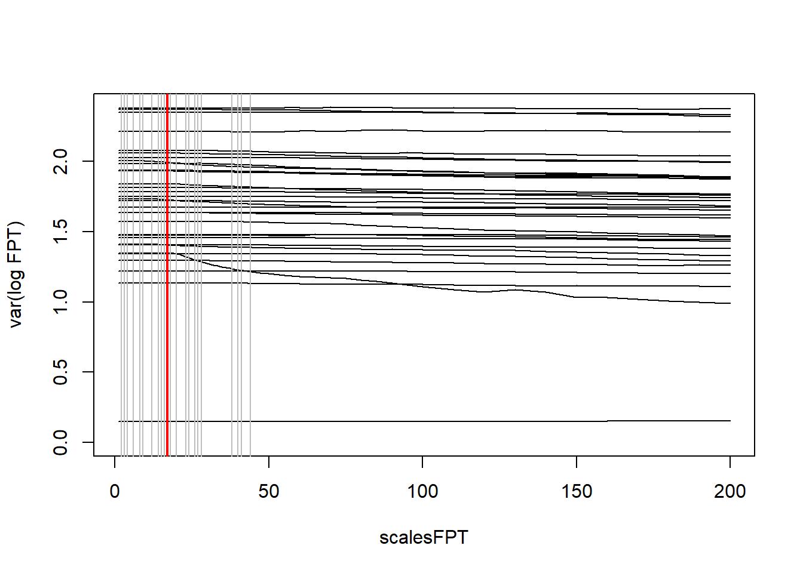
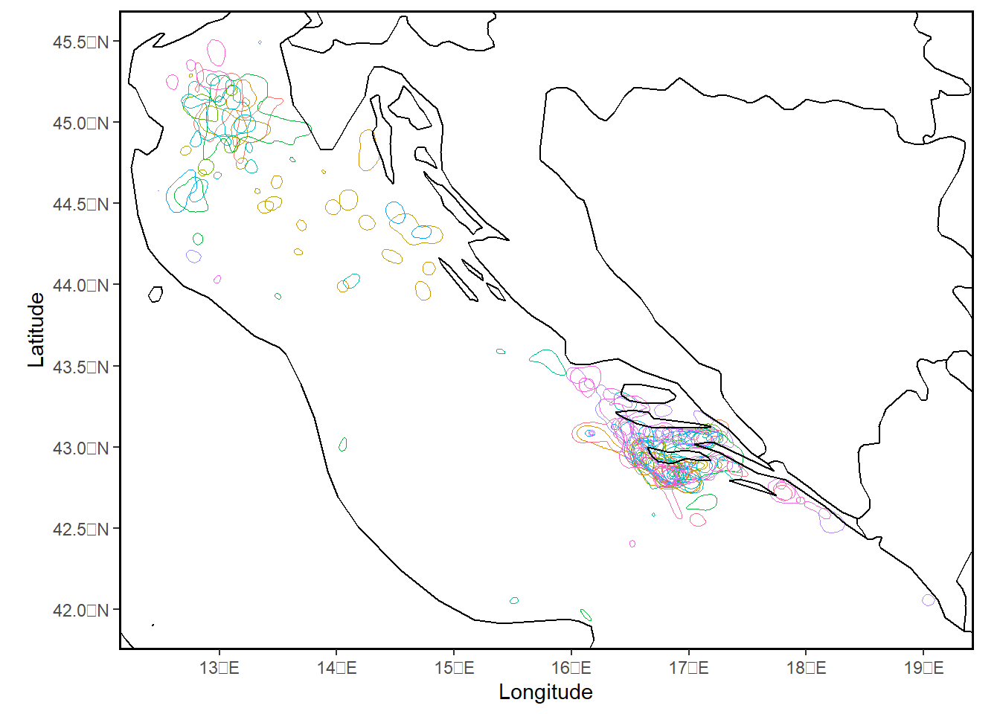
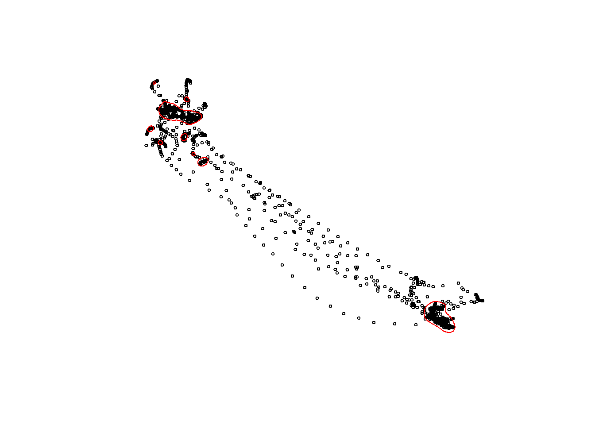
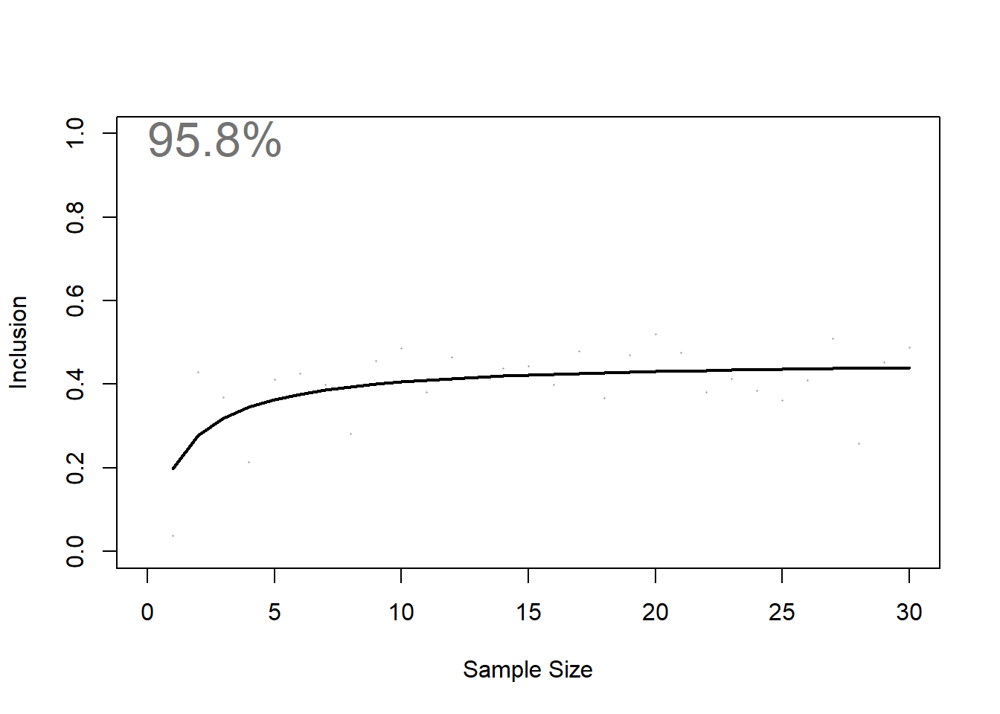
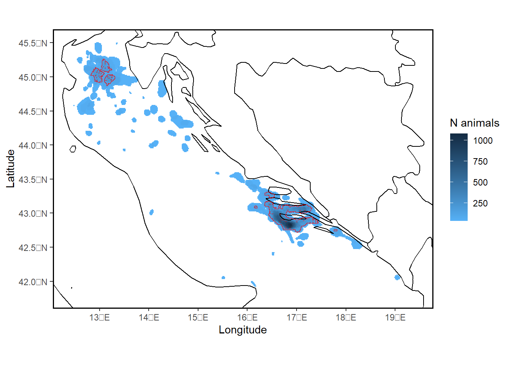
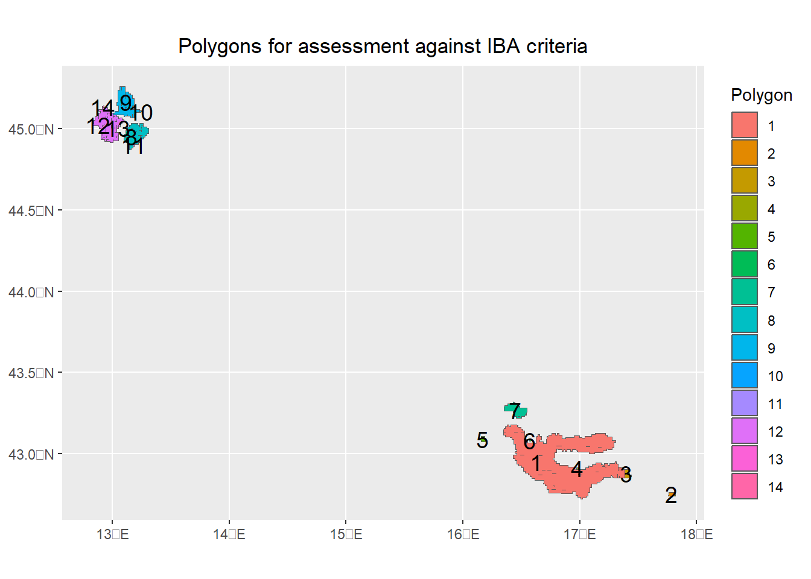

16 Track2KBA - Central Place Foragers: Analyse cleanded data
Analyses outlined in this chapter were performed in R version 4.2.2 (2022-10-31 ucrt)
This chapter was last updated on 2023-08-23
16.1 What this chapter covers:
Analysis of key data via the track2kba protocol
Deriving a final site which could be used for conservation planning purposes (such as that of KBAs)
16.2 Where you can get example data for the chapter:
This tutorial uses example data from a project led by the BirdLife International partner in Croatia: BIOM
The citation for this data is: TBC
The example data can be downloaded from: Provide relevant download location
16.3 Description of data prefiltering for main track2kba analysis:
Central place foraging data used for this tutorial have been prepared previously as follows:
General review of spatial data
Removing - if necessary - sections of tracks when animals were not tracked but devices were recording information [example code / procedures not yet provided]
Arranging data chronologically and removing duplicate entries
Speed filter for clearly erroneous location points
Removing location points around the vicinty of the colony (as specified by the inner buffer parameter in earlier steps)
Removing data with too few location points
Generating basic summary statistics of the tracking data
Reviewing the sampling frequency of data (i.e. what frequncy you set your devices to record at versus what they actually recorded at)
Liearly interpolating data to generate tracking information that approximates an even sampling interval
Consider: When to clean data with respect to the steps above may depend on the type of animal you tracked and life-cycle stage the animal was tracked over.
Non central place foraging data: If your data relates to a period when an animal was not exhibiting central place foraging, consider cleaning the data in line with steps above. However, you would not need to split tracks into trips and summarise data as above. The key thing is to have data approximating an equal sampling interval (i.e. data points evenly sampled in time)
16.4 Load packages
Load required R packages for use with codes in this chapter:
If the package(s) fails to load, you will need to install the relevant package(s).
## ~~~~~~~~~~~~~~~~~~~~~~~~~~~~~~~~~~~~~~~~~~~~~~~~~~~~~~~~~~~~~~~~~~~~~~~~~~~~~
## Load libraries --------------------------------------------------------------
## ~~~~~~~~~~~~~~~~~~~~~~~~~~~~~~~~~~~~~~~~~~~~~~~~~~~~~~~~~~~~~~~~~~~~~~~~~~~~~
## sf package for spatial data analyses (i.e. vector files such as points, lines, polygons)
library(sf)
## Tidyverse for data manipulation
library(tidyverse)
## ggplot2 for plotting opionts
library(ggplot2)
## rnaturalearth package for basemaps in R
library(rnaturalearth)
## leaflet package for interactive maps in R
#install.packages("leaflet")
library(leaflet)
##
library(purrr)
library(furrr)
#install.packages("track2KBA")
library(track2KBA)
## for date time
library(lubridate)
## for stats
library(stats)
## speed filter
library(trip)
## linear interpolation
library(adehabitatLT)16.5 Define object names for chapter
Typically, if your data follows the same format as the examples in the chapter (and previous chapters), then below should be the only thing(s) you need to change.
## ~~~~~~~~~~~~~~~~~~~~~~~~~~~~~~~~~~~~~~~~~~~~~~~~~~~~~~~~~~~~~~~~~~~~~~~~~~~~~
## Specify projections / store needed CRS definitions as variables ----
## SEE: https://epsg.io/
## ~~~~~~~~~~~~~~~~~~~~~~~~~~~~~~~~~~~~~~~~~~~~~~~~~~~~~~~~~~~~~~~~~~~~~~~~~~~~~
## world - unprojected coordinates
# wgs84 <- st_crs("EPSG:4326")
## ~~~~~~~~~~~~~~~~~~~~~~~~~~~~~~~~~~~~~~~~~~~~~~~~~~~~~~~~~~~~~~~~~~~~~~~~~~~~~
## Source a relevant basemap (download / or load your own)
## ~~~~~~~~~~~~~~~~~~~~~~~~~~~~~~~~~~~~~~~~~~~~~~~~~~~~~~~~~~~~~~~~~~~~~~~~~~~~~
## Source a world map from the rnaturalearth R package
## see details of function to change the type of map you get
## If you can't download this map - you may need to load a separate shapefile
## depicting a suitable basemap
# worldmap <- rnaturalearth::ne_download(scale = "large",
# type = "countries",
# category = "cultural",
# destdir = tempdir(),
# load = TRUE,
# returnclass = "sf")16.6 Read in file (or file created from previous chapter)
## read in the pre-filtered, cleaned tracking data
trips_interp_df <- read.csv("./data-testing/tracking-data/Puffinus-yelkouan-track2kba-files/Puffinus-yelkouan-input-tracks.csv")
## read in the summary data for the tracks
sumTrips <- read.csv("./data-testing/tracking-data/Puffinus-yelkouan-track2kba-files/Puffinus-yelkouan-input-summary.csv")16.7 track2KBA: format data for use
16.7.1 track2KBA::formatFields()
This function will help format your data to align with that required of track2KBA.
In other words: for the track2KBA functions to work, your data needs to have certain columns named in the appropriate way. This function will help with that.
We apply the formatting to the most recently filtered data.
## review current data
head(data.frame(trips_interp_df),2)## x y date dx dy
## 1 16.88553100 42.8115280 2019-05-24 00:49:09 0.002069365 0.0001677
## 2 16.88760037 42.8116957 2019-05-24 01:19:09 0.002553635 -0.0004107
## dist dt R2n abs.angle rel.angle
## 1 0.002076149030 1800 0.000000000e+00 0.08086264312 NA
## 2 0.002586450503 1800 4.310394793e-06 -0.15946401320 -0.2403266563
## trip_id burst pkey
## 1 19_Tag17600_Z-9_01 19_Tag17600_Z-9_01 19_Tag17600_Z-9_01.2019-05-24 00:49:09
## 2 19_Tag17600_Z-9_01 19_Tag17600_Z-9_01 19_Tag17600_Z-9_01.2019-05-24 01:19:09
## Longitude Latitude scientific_name common_name site_name
## 1 16.88553100 42.8115280 Puffinus yelkouan Yelkouan Shearwater Lastovo SPA
## 2 16.88760037 42.8116957 Puffinus yelkouan Yelkouan Shearwater Lastovo SPA
## colony_name lat_colony lon_colony bird_id age sex breed_stage
## 1 Z 42.774893 16.875649 19_Tag17600_Z-9 adult unknown chick-rearing
## 2 Z 42.774893 16.875649 19_Tag17600_Z-9 adult unknown chick-rearing
## breed_status
## 1 populated-upon-upload-STDB
## 2 populated-upon-upload-STDB## Format the data BACK INTO key data fields to the standard used in track2KBA
dataGroup_interp <- formatFields(
## your input data.frame or tibble
dataGroup = trips_interp_df,
## ID of the animal you tracked
fieldID = "bird_id",
fieldDateTime = "date",
## longitude of device
fieldLon = "Longitude",
## latitude of device
fieldLat = "Latitude"
)
## Check output. Output is a data.frame
head(dataGroup_interp,2)## x y date dx dy
## 1 16.88553100 42.8115280 2019-05-24 00:49:09 0.002069365 0.0001677
## 2 16.88760037 42.8116957 2019-05-24 01:19:09 0.002553635 -0.0004107
## dist dt R2n abs.angle rel.angle
## 1 0.002076149030 1800 0.000000000e+00 0.08086264312 NA
## 2 0.002586450503 1800 4.310394793e-06 -0.15946401320 -0.2403266563
## trip_id burst pkey
## 1 19_Tag17600_Z-9_01 19_Tag17600_Z-9_01 19_Tag17600_Z-9_01.2019-05-24 00:49:09
## 2 19_Tag17600_Z-9_01 19_Tag17600_Z-9_01 19_Tag17600_Z-9_01.2019-05-24 01:19:09
## Longitude Latitude scientific_name common_name site_name
## 1 16.88553100 42.8115280 Puffinus yelkouan Yelkouan Shearwater Lastovo SPA
## 2 16.88760037 42.8116957 Puffinus yelkouan Yelkouan Shearwater Lastovo SPA
## colony_name lat_colony lon_colony ID age sex breed_stage
## 1 Z 42.774893 16.875649 19_Tag17600_Z-9 adult unknown chick-rearing
## 2 Z 42.774893 16.875649 19_Tag17600_Z-9 adult unknown chick-rearing
## breed_status DateTime
## 1 populated-upon-upload-STDB 2019-05-24 00:49:09
## 2 populated-upon-upload-STDB 2019-05-24 01:19:0916.8 track2kba:: projectTracks()
## run the function
tracks_interp <- projectTracks(dataGroup = dataGroup_interp, projType = 'azim', custom=TRUE )16.9 track2kba:: findScale()
findScale() provides options for setting the all-important smoothing parameter in the KDE.
findScale() calculates candidate smoothing parameter values using different methods.
Choosing the ‘optimal’ smoothing parameter is critical. See GitHub page.
[Consider what further advice we can give to users regarding choice of smoothing parameter?]
## implement findScale function
hVals <- findScale(
tracks = tracks_interp,
scaleARS = TRUE,
sumTrips = sumTrips)
## Review output
hVals## med_max_dist step_length mag href scaleARS
## 1 44.05 1.37 3.79 14.33 17## must choose between one of three smoothing parameters for further analyses
## smoothing parameter is distance in km. Read more in supporting documents.
## Review each outputted smoothing parameter option
hVals$mag # affected by range of animal movement. Only works for central place foragers.## [1] 3.79hVals$href # sort of represents quality of data## [1] 14.33hVals$scaleARS # affected by quality of data and subsequent ability to determine scale at which animal interacts with environment. Learn more about First Passage Time analysis## [1] 1716.10 track2kba: estSpaceUse()
Produce KDEs for each individual animal.
NOTE: The grid cell size (i.e., grid resolution) should be less than the selected h value, otherwise the entire space use area of the animal may be encompassed in few cells.
Guidance needed on choice of smoothing parameter
[Guidance: Choice of smoothing parameter]
Guidance on choice of UD
[Guidance on choice of UD]
KDE <- estSpaceUse(
tracks = tracks_interp,
scale = hVals$mag,
levelUD = 50,
polyOut = TRUE
)16.11 track2kba:: mapKDE()
use the simple mapping function to get an overview of UDs for individuals
## Specify colony location if you have this.
#colony <- data.frame()
##
mapKDE(KDE = KDE$UDPolygons,
colony = NULL) # input your colony location if you have this, to view in plot
16.12 track2kba: review choice of smoothing parameter
After applying estSpaceUse and viewing plot with mapKDE, at this step we should
verify that the smoothing parameter value we selected is producing reasonable
space use estimates, given what we know about our study animals. Are the core
areas much larger than expected? Much smaller? If so, consider using a different
value for the scale parameter in the estSpaceUse function.
## specify an individual
## 14
p = 7
## convert to sf object
trips_sf_IndBird <- st_as_sf(tracks_interp) %>%
dplyr::filter(ID == unique(tracks_interp$ID)[p])
## get the UD for a single individual
ud_sf_IndBird <- KDE$UDPolygons %>%
dplyr::filter(id == trips_sf_IndBird$ID[1]) %>%
st_transform(.,crs = st_crs(tracks_interp))
## Plot OVERALL data again for first single individual
plot(st_geometry(trips_sf_IndBird),
cex = 0.5,
pch = 1)
## and add the UD to the plot
plot(st_geometry(ud_sf_IndBird),add=T, border = "red")
warning("Assess whether your selected smoothing parameter has resulted in sensible
Utilisation Distributions.")
warning("Can we use the above to consider some form of test to guide smoothing
parameter choice?.")16.13 track2kba::repAssess()
Estimate how representative this sample of animals is of the population.
NOTE: iterations should be set to 100 at a minimum when running the script officially.
##
repr <- repAssess(
tracks = tracks_interp,
KDE = KDE$KDE.Surface,
levelUD = 50,
iteration = 1, ## iterations should be set to 100 at a minimum when running the script officially
bootTable = FALSE)
16.14 track2kba::findSite()
Using findSite() we can identify areas where animals are overlapping in space and delineate boundaries of sites which may be suited to area-based conservation measures.
Types of sites that can be identified with this approach include Key Biodiversity Areas (KBAs).
[Consider broader guidance required about identifying KBAs with this approach]
NOTE: The findSite() function is a computationally intensive task. It may take some time (several minutes) to run. Go make a cup of tea while you wait :)
## indicate the population size of your source populaiton. e.g. the population size
## of the colony from which you tracked birds. For KBA identification, this estimate
## should be in Mature Individuals.
## I.e. for seabird colonies: breeding pairs * 2 = mature individuals
SourcePopulationSize = 1200
##
sf_use_s2(FALSE)
## findSite function
Site_PolyTrue <- findSite(
KDE = KDE$KDE.Surface,
represent = repr$out,
levelUD = 50,
popSize = SourcePopulationSize,
polyOut = T
)
## review key outputs
Site_PolyTrue## Simple feature collection with 32 features and 3 fields
## Geometry type: MULTIPOLYGON
## Dimension: XY
## Bounding box: xmin: 12.05180343 ymin: 41.60260051 xmax: 19.77106214 ymax: 45.69826995
## Geodetic CRS: WGS 84
## First 10 features:
## N_animals N_IND potentialSite geometry
## 1 0.00000000 0 FALSE MULTIPOLYGON (((12.8548341 ...
## 2 34.84467009 1 FALSE MULTIPOLYGON (((19.09721094...
## 3 69.68934019 2 FALSE MULTIPOLYGON (((18.17394351...
## 4 104.53401028 3 FALSE MULTIPOLYGON (((17.8440147 ...
## 5 139.37868037 4 TRUE MULTIPOLYGON (((17.02245747...
## 6 174.22335046 5 TRUE MULTIPOLYGON (((17.00830285...
## 7 209.06802056 6 TRUE MULTIPOLYGON (((16.86211499...
## 8 243.91269065 7 TRUE MULTIPOLYGON (((16.7456741 ...
## 9 278.75736074 8 TRUE MULTIPOLYGON (((16.78923212...
## 10 313.60203083 9 TRUE MULTIPOLYGON (((17.0123853 ...dim(Site_PolyTrue)## [1] 32 4Site_PolyTrue$potentialSite## [1] FALSE FALSE FALSE FALSE TRUE TRUE TRUE TRUE TRUE TRUE TRUE TRUE
## [13] TRUE TRUE TRUE TRUE TRUE TRUE TRUE TRUE TRUE TRUE TRUE TRUE
## [25] TRUE TRUE TRUE TRUE TRUE TRUE TRUE TRUE16.15 track2kba::mapSite()
A simple plotting option for mapping the outputs of findSite().
## plot option
Sitemap_PolyTrue <- mapSite(Site_PolyTrue,
colony = NULL)
## review output object
Sitemap_PolyTrue16.16 track2kba::findSite(), further understanding
If in findSite we instead specify polyOut=FALSE, our output will be a spatial grid of animal densities, with each cell representing the estimated number, or percentage of animals using that area. So this output is independent of the representativness-based importance threshold. i.e. the output indicates only the areas used by more or less individuals that you tracked, it does not give you a polygon that you would necessarily assess against IBA / KBA criteria. The output also does not use the representatives measure to estimate the OVERALL number of individuals that are likely using certain areas when you specify the popSize of your source population.
# ## findSite with polyOut=FALSE
# Site_PolyFalse <- findSite(
# KDE = KDE$KDE.Surface,
# represent = repr$out,
# levelUD = 50,
# popSize = SourcePopulationSize,
# polyOut = FALSE
# )
#
# ## review outputs
# dim(Site_PolyFalse)
# max(Site_PolyFalse@data$N_IND)
# max(Site_PolyFalse@data$N_animals)
# head(unique(Site_PolyFalse@data$ID_IND))
#
# ## simple plot option
# Sitemap_PolyFalse <- mapSite(Site_PolyFalse, colony = colony)
#
# ## review output object
# Sitemap_PolyFalse16.17 track2kba::findSite(), outputs explained
By default, findSite sets the threshold of site importance for the source population based on the degree of tracking sample representativeness following Lascelles et al. (2016): i.e., samples that are >90%, 80-89%, 70-79%, and <70% representative set the threshold for delineating a site as important for the local source population at 10%, 12.5%, 25%, and 50%, respectively)
For samples with representativeness of >90%, the area that is considered potentially suitable for assessment against relevant criteria. eg. KBAs, is only that area used by 10% or MORE of the individuals from the source population. Any area used by 10% or LESS of the source population is not thought to sufficiently represent where the source population may be found, and hence is excluded from further assessment.
The threshold rules were agreed upon by expert consensus.
Note, when representativeness = 90% a bigger overall area in red is defined as potentially suitable for assessment against relevant criteria. when representativeness = 75% a SMALLER overall area in red is defined as potentially suitable for assessment against relevant criteria. This is because with a lower representativeness score, track2KBA provides a more conservative estimate of which areas can definitively be considered core areas regularly used by the sampled population. NOTE also: the total number of individuals estimated using the area is reduced when representativeness is lower. ie. basically, a lower total number of individuals are estimated to be using areas when we are more unsure about how well the data likely represents the source population.
16.18 track2kba: Save key outputs
[Consider saving key outputs here instead and aligning output names with the seaward extension outputs. Then we could have a single chapter where we deal with the outputs of both for assessing sites against relevant criteria]
16.19 track2kba::findSite(), IBA / KBA assessment considerations
[Consider further text / options here]
16.20 IBA assessment data preparation
NOTE, when polyOut = TRUE for function findSite(), the output includes a simple features object with polygons (represented by each row of data) that represent the number of overlapping UDs for individuals (N_IND), and the associated estimate of abundance (N_animals) within each of those polygons scaled according to the popSize and representativeness score.
In track2KBA we don’t offer much advice about how to use the final outputs from findSite() for assessing data against various criteria, such as the IBA or KBA criteria. The text on GitHub (as of 18 Oct 2022), notes:
‘Then, we can combine all the polygons within the ’potentialSite’ area, and use, for example, the maximum number of individuals present in that area to assess whether it may merit identification as a Key Biodiversity Area according to the KBA standard.’,
BUT: This does text does not describe how to deal with all the individual polygons that were representative, and may be quite separate from each other in space!
## To assess each polygon we first need to summarise the data further.
## First, we must determine how many and where each unique polygon is.
Site.polygons <- Site_PolyTrue %>%
## filter to only include potentialSite's
dplyr::filter(potentialSite==TRUE) %>%
## union to create multipart polygon
st_union(.) %>%
## cast to create single part polygon object
st_cast(., "POLYGON") %>%
st_as_sf() %>%
## add unique id for each polygon
mutate(poly.id = 1:nrow(.))
## Plot to review
p <- ggplot() +
geom_sf(data = Site.polygons, aes(fill = as.factor(poly.id))) +
#scale_fill_viridis_c(trans = "sqrt", alpha = 1) +
scale_color_viridis(discrete = TRUE) +
guides(fill=guide_legend(title='Polygon')) +
## add the polygon labels
geom_sf_text(data = Site.polygons, aes(label = poly.id), colour = "black", size = 5) +
## remove x y labels
theme(axis.title.x = element_blank()) +
theme(axis.title.y = element_blank()) +
# Title
ggtitle(paste("Polygons for assessment against IBA criteria",sep=""))+
theme(plot.title = element_text(hjust = 0.5))
p
## Second, considering that for each representative polygon, the maximum number
## of animals could technically spread across anywhere in the site, we need
## to get the maximum number of animals for each site.
## Merge the new unique polygons with the Site info and get overlapping data
sf::sf_use_s2(FALSE) # run this if issues with st_intersection: https://stackoverflow.com/questions/68478179/how-to-resolve-spherical-geometry-failures-when-joining-spatial-data
## Using an intersection, find all the data from Site object (the findSite output)
## that intersects with Site.polygons object (the unique polygons)
Site.polygons.data <- st_intersection(Site.polygons, Site_PolyTrue)
## Summarise the data for each unique polygon.
Site.polygons.data.summary <- Site.polygons.data %>%
group_by(poly.id) %>%
summarise(N_animals_max = round(max(N_animals),0),
N_IND_max = round(max(N_IND ),0)) %>%
st_drop_geometry() %>%
data.frame()
## bind this data back onto the spatial object
Site.polygons <- left_join(Site.polygons,
Site.polygons.data.summary,
by = "poly.id")[Further guidance will need to be provided about the weird artefact sites you can get from the track2kba analysis]